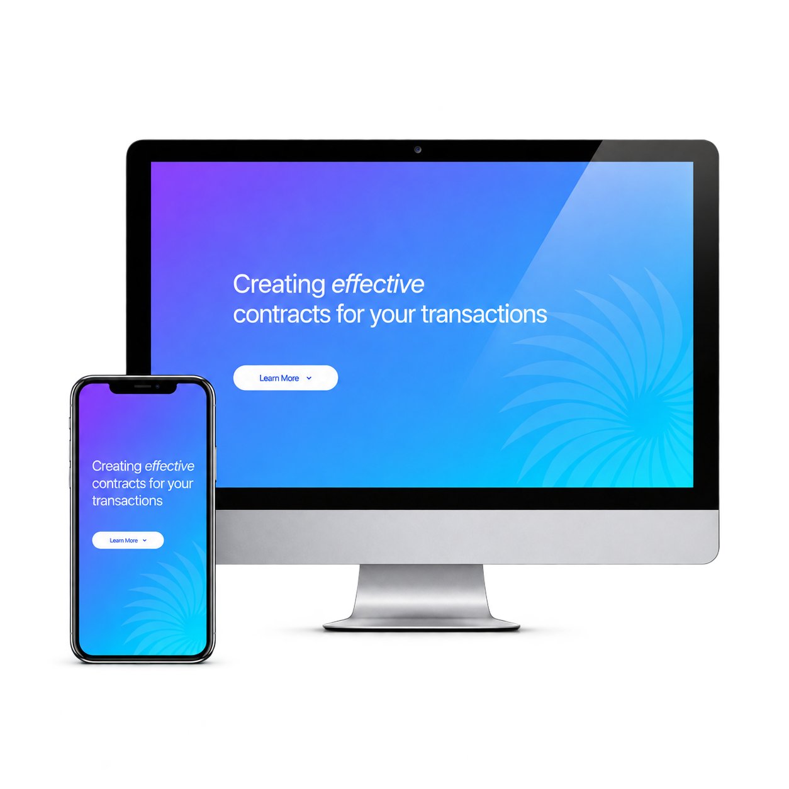
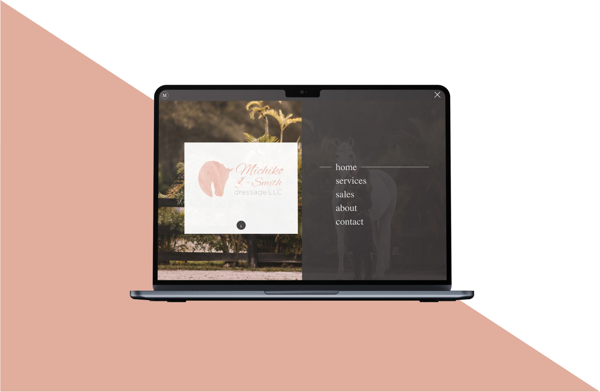
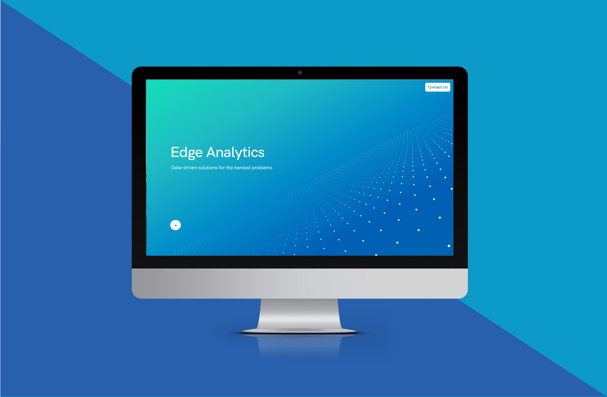
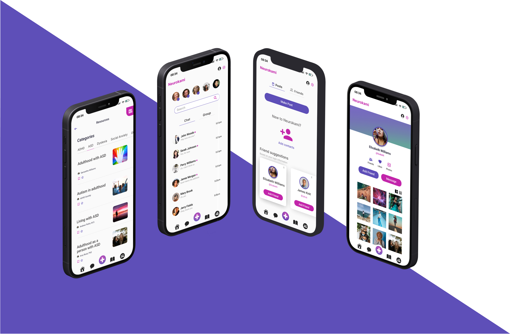

Alanna Bent, UI/UX Designer and Web Developer
UI/UX Designer / Web Developer
Where design meets human behavior
Where design meets human behavior
I bridge psychology, business strategy, and design to create purposeful digital experiences. My multidisciplinary approach connects human behavior, visual strategy, and technical execution to transform complex needs into intuitive, impactful solutions.
My writing on design

01Borrey Lawweb design + web dev 01The world’s favorite color: an in-depth analysis of the color blue in UX design
02Michiko Dressageweb design + web dev 02Biases and their effects in UX Design
03Edge Analyticsweb design + web dev 03The importance of IA in UX design
04Neurokamiapp design 04Interviewing without bias: a guide to user interviews in UX design